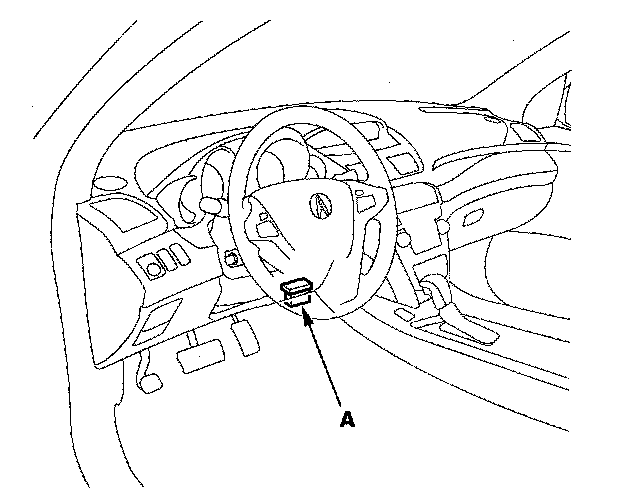

ECM Reset
HDS Clear CommandThe PCM stores various specific data to correct the system even if there is no electrical power such as when the battery negative terminal or No. 8 IGP (15 A) fuse are disconnected. Stored data based on failed parts should be cleared by using the "CLEAR COMMAND" of the HDS, if parts are replaced.
The HDS has three kinds of clear commands to meet this purpose. They are DTC clear, PCM reset, and CKP pattern clear. DTC clear command erases all stored DTC codes, freeze data, on-board snapshot, and readiness codes. This must be done with the HDS after reproducing the DTC during troubleshooting.
The PCM reset command erases all stored DTC codes, freeze data, on-board snapshot, readiness codes, and all specific data to correct the system except CKP pattern. If the CKP pattern data in the PCM was cleared, you must do the CKP pattern learn procedure. The CKP pattern clear command erases only CKP pattern data. This command is for repair of a misfire or the CKP sensor.
Scan Tool Clear Command
If you are using a generic scan tool to clear commands, be aware that there is only one setting for clearing the PCM, and it clears all commands at the same time (CKP pattern learn, idle learn, readiness codes, freeze data, on-board snapshot, and DTCs). After you clear all commands, you then need to do these procedures, in this order: PCM idle learn procedure ; CKP pattern learn procedure;
Test-drive to set readiness codes to complete.
DTC Clear
1. Clear the DTC with the HDS while the engine is stopped.
2. Turn the ignition switch OFF.
3. Turn the ignition switch ON (II), and wait for 30 seconds.
4. Turn the ignition switch OFF, and disconnect the HDS from the DLC.
PCM Reset
1. Reset the PCM with the HDS while the engine is stopped.
2. Turn the ignition switch OFF.
3. Turn the ignition switch ON (II), and wait for 30 seconds.
4. Turn the ignition switch OFF, and disconnect the HDS from the DLC.
5. Do the PCM idle learn procedure.
Crank (CKP) Pattern Clear/Crank (CKP) Pattern Learn
Clear/Learn Procedure (with the HDS)

1. Connect the HDS to the data link connector (DLC) (A) located under the driver's side of the dashboard.
2. Turn the ignition switch ON (II).
3. Make sure the HDS communicates with the PCM and other vehicle systems. If it does not, go to the DLC circuit troubleshooting. Testing and Inspection
4. Select CRANK PATTERN in the ADJUSTMENT MENU with the HDS.
5. Select CRANK PATTERN LEARNING with the HDS, and follow the screen prompts.
Learn Procedure (without the HDS)
1. Start the engine. Hold the engine speed at 3,000 rpm without load (in Park or neutral) until the radiator fan comes on.
2. Test-drive the vehicle on a level road: Decelerate (with the throttle fully closed) from an engine speed of 2,500 rpm down to 1,000 rpm with the transmission in D position.
3. Test-drive the vehicle on a level road: Decelerate (with the throttle fully closed) from an engine speed of 5,000 rpm down to 3,000 rpm with the transmission in D position.
4. Repeat step 2 and 3 several times.
5. Turn the ignition switch OFF.
6. Turn the ignition switch ON (II), and wait for 30 seconds.
How to End a Troubleshooting Session (required after any troubleshooting)
1. Reset the PCM with the HDS.
2. Do the PCM idle learn procedure.
3. Turn the ignition switch OFF.
4. Disconnect the HDS from the DLC.
NOTE: The PCM is part of the immobilizer system. If you replace the PCM, it will have a different immobilizer code. In order for the engine to start, you must rewrite the immobilizer code with the HDS.